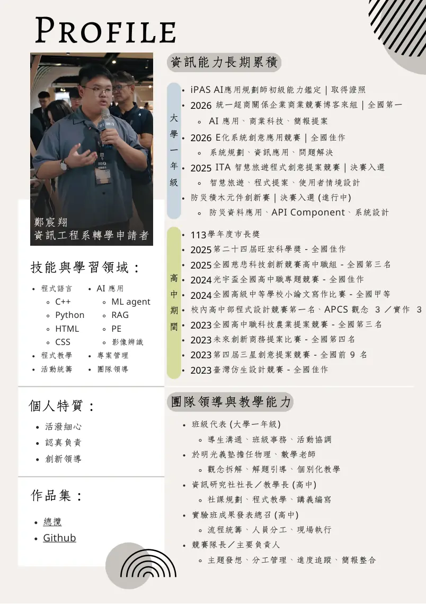

National Taipei University of Technology｜CS Transfer
讓評審 30 秒看懂
我做過什麼
我目前以資訊工程轉學申請為核心，將競賽、專題與 GitHub 作品整理成可快速閱讀的作品集。主軸不是「獎項很多」，而是從問題定義、資料整理、系統設計到 Demo / Repo 的工程化呈現。
6代表作品模組
5能力主軸
3工程主打作品
1評審快速入口

網站閱讀順序先看評審快速模式，再看 GripMind、Justus OJ、Silent Disaster Zone API。
Portfolio Strategy
不是作品展示櫃，是評審導覽系統
把備審裡的作品重新排序：工程含量高的放前面，AI 與商業提案放中段，高中長期累積放最後補強脈絡。
工程證據優先
GripMind、Justus OJ、Silent Disaster Zone API 直接呈現硬體、後端、Docker、API 與資料流。
能力面向清楚
AI 應用、系統規劃、IoT 整合、程式實作、資料 API、領導教學各自對應作品。
連到證據
每個作品頁都保留 GitHub / Demo / 備審截圖 / 技術棧，避免只有敘述沒有證據。


Fit for CS
我想傳達的核心訊息
我不是只會做提案，而是正在把 AI 應用、資料流程、API 文件、Docker 沙箱、LINE Bot 與 App 原型，轉化成更工程化的作品。
網站使用方式
1
先看評審快速模式
掌握三個主打作品與能力對照。
掌握三個主打作品與能力對照。
2
再看作品細節
每件作品都有問題、角色、技術、流程、下一步。
每件作品都有問題、角色、技術、流程、下一步。
3
最後看佐證
用獎狀、備審 PDF、GitHub 和 Demo 補強可信度。
用獎狀、備審 PDF、GitHub 和 Demo 補強可信度。